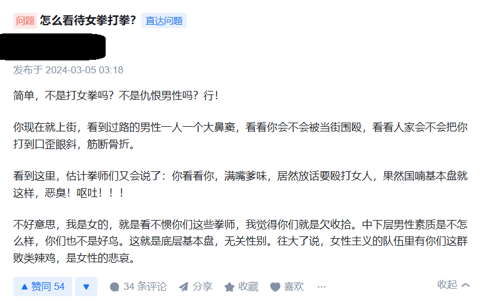
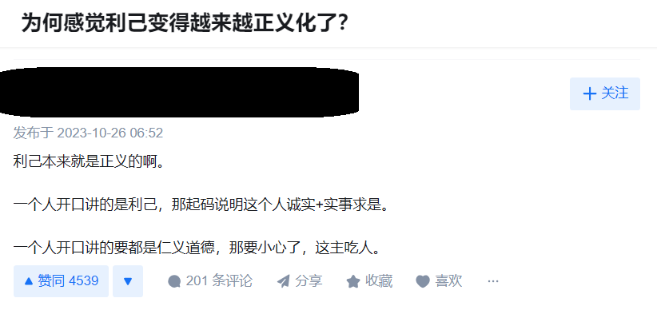
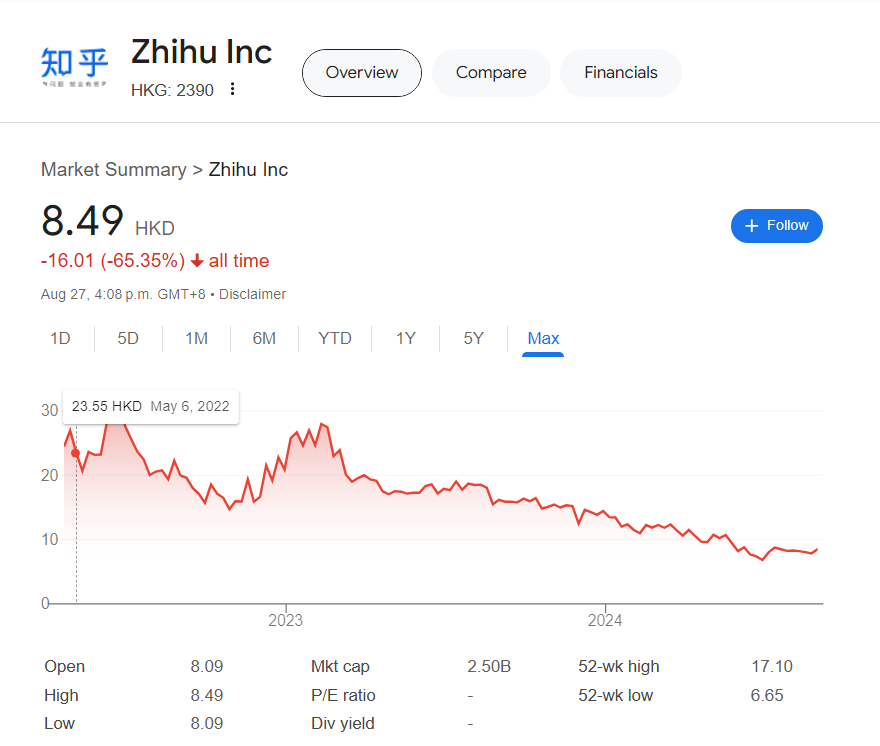

知乎的推送质量真不太行 - The quality of Zhihu’s recommendations is really not that good.
我曾经是一个相当重度的知乎用户，每天使用的时间平均下来肯定超过3小时。但2020年，我一气之下把知乎卸载了。当时卸载的原因有2点：主页上让我感到焦虑的内容越来越多，以及，我越来越受不了“傲慢的精英社达”答主了。
I used to be a heavy user of Zhihu, spending an average of over three hours on it every day. But in 2020, I uninstalled the app in a fit of frustration. There were two main reasons for this: first, the increasing amount of anxiety-inducing content on my homepage, and second, my growing intolerance towards the "arrogant elite social Darwinists" among the users.
焦虑就像芥末蚕豆，很香，但是吃多了嘴会相当不舒服，而且再吃别的东西时总会觉得没味道。
Anxiety is like spicy peas———tasty, but consuming too much leaves an unpleasant aftertaste, and it ruins your appetite for anything else.
人在焦虑症状发作的时候，会本能地把自己的焦虑具象化，知乎就恰好满足我这一需求：给了我无限的主题供我焦虑，比如身材焦虑，社会地位焦虑，性别焦虑，年龄焦虑，学历焦虑，专业焦虑。记得18/19年的时候，生化环材是唯四的天坑专业，我也为我的专业未来感到焦虑。知乎上的态度是，不转码这辈子就废了，我当时可太“认可”这句话了啊。
When people experience anxiety, they instinctively look for something to focus that anxiety on, and Zhihu provided me with endless topics to worry about: body image, social status, gender, age, education, and career prospects. I remember back in 2018 and 2019, fields like biochemistry and materials science were considered the ultimate dead-end majors on Zhihu, with the prevailing attitude being that if you didn’t switch to coding, your life was basically over. I really "agreed" with that sentiment at the time.
不仅如此，刷知乎还会加重人的焦虑症。很好玩的是，我之前一直对我的学历相当自信，但在知乎，即使是985，没什么奖学金/荣誉也仍然是废物，更别提麻省哈佛的了。当时这对我这种，对焦虑没什么抵抗能力的破大学生来说，就是一个恶性循环，刷知乎的时间越多，越焦虑，越焦虑，越刷知乎。
Moreover, browsing Zhihu only exacerbated my anxiety. It’s ironic———I used to be quite confident in my academic achievements, but on Zhihu, even being a graduate from a top Chinese university like 985 was considered worthless if you didn’t have scholarships or honors. And let’s not even mention those from Harvard or MIT. For someone like me, an undergraduate student with little resistance to anxiety, this became a vicious cycle———the more I scrolled, the more anxious I became, and the more anxious I was, the more I scrolled.
焦虑倒只是伤身，对人的价值观没什么危害。“傲慢的精英社达”对人的价值观的腐蚀性才是相当高。输出这种价值观的博主中，他们自己不一定多么精英，但找到一个可以鄙视的人总是够他们输出一大篇文章了，再配上点阴阳怪气，能收割一大把点赞。精英是他们对自己的定位，或者是要求；社达（社会达尔文主义）是他们的价值观，而傲慢是他们最大的问题。例子如下：
Anxiety may only harm your health, but the "arrogant elite social Darwinists" are much more corrosive to one’s values. These users might not actually be that elite themselves, but they’re always able to find someone to look down on, crafting long, snarky posts to harvest likes. They position themselves as the elite, embrace social Darwinism as their creed, and arrogance is their biggest flaw. Here are some examples:


总之，为了不受这帮人的影响，我卸载了知乎。
In short, I uninstalled Zhihu to avoid being influenced by these people.
故事没完。这一段时间，我感觉推特，b站，reddit都越来越让人不舒服了，推特上无脑恨国的和搞色情的太多，屏蔽不过来；b站给我推送的视频越来越有宣传味道，也没什么高质量的内容；而reddit上人戾气越来越重，随便什么都能吵起来。我感觉也许可以回坑知乎，屏蔽一波智障之后应该至少能看。
The story isn’t over. Lately, I’ve been feeling increasingly uncomfortable with platforms like Twitter, Bilibili, and Reddit. There’s too much mindless anti-national sentiment and explicit content on Twitter—it’s impossible to block it all. Bilibili keeps recommending videos with a propagandistic tone, and the quality content is diminishing. As for Reddit, the atmosphere is getting more hostile; people are ready to argue about anything. I thought maybe I could return to Zhihu, and after blocking several idiots, there might still be something worth reading.
但我错了。这平台之前的毛病一样没改，广告还多了。如下所示（超超长图警告）：
But I was wrong. The same old problems are still there, and the ads have only increased. Just look at this (warning: Extremely long image):

这是我一个新号的知乎推荐首页。如果把所有的卖小说广告、厌女言论、吐槽男女关系、煽动焦虑、炫耀装逼、"如何评价"（用老套保守的价值观阴阳怪气评价各种社会事件，指点江山）、追星内容，琐碎热点都屏蔽掉，实在没剩下几篇能引起我兴趣的回答。
This is the recommended homepage on Zhihu for a new account I created. If you filter out all the novel ads, misogynistic remarks, complaints about gender relations, anxiety-inducing content, bragging and showing off, how-do-you-evaluate responses (where outdated, conservative values are used to sarcastically comment on various social events and pontificate), celebrity gossip, and trivial trending topics, there are barely any posts left that interest me.
我说它“指点江山”，但我感觉“如何评价”的回答就是知乎的卖点。总有老保看社会上很多现象看不惯，但自己又没那个自信点评两句，所以打开知乎，看看其他自信的老保是怎么阴阳怪气的。然后发现，卧槽，原来不止我一个人这么想，然后就舒服了，感觉又多了几个赛博知己或者嘴替。
I describe it as "pontificating," but I feel like the how-do-you-evaluate responses are actually a selling point for Zhihu. There are always some conservative folks who are displeased with many societal phenomena but lack the confidence to express it themselves. So, they turn to Zhihu to see how other confident conservatives sarcastically critique these issues. Then they realize, "Wow, I'm not the only one who thinks this way," and feel a sense of comfort, as if they've found a few cyber kindred spirits or mouthpieces.
知乎显然在尝试，把各种各样的内容都推送给我，试图猜测这个新用户喜欢什么东西，然后就大量推送到首页。但推的这种东西让我实在是感到被侮辱了。如果知乎作为一个平台就是这种态度，我觉得他们的股价跌得还不够多。
Zhihu is clearly trying to push all kinds of content on me, attempting to guess what this new user might like, and then flooding the homepage with it. But this approach makes me feel strangely insulted. If this is the platform’s attitude, I don’t think their stock price has dropped enough yet.

多说一句，其他平台的推送内容也没见得比知乎好多少，甚至更差。想要好好看内容，还得手动寻找优质博主。
Btw, the content pushed by other platforms isn't much better than Zhihu's, and some are even worse. If you want to find good content, you'll still need to manually seek out quality creators.
2024/09/16 更新：
2024年，使用“油盐不进”法迎战 知乎首页推荐 的珍贵记录：
看文不？甜的？虐的？还有火葬场 —— 没兴趣
追星不？周杰伦最近可显老了 —— 不然呢，他都45了
我猜你想知道：偷国人知道他们被叫“偷国”吗？ ——
建议以身作则，把红薯还给菲律宾
我猜你想知道：真正爱读书的人都是怎样读书的？ ——
他想咋读都行，跟我没关系
换一个话题，你讨厌盎萨吗？想知道美元是怎么收割南美的吗。 —— 不讨厌
那你是神友吧，我懂你。看点人口吧笑话？ —— 也不算
不神不兔，你不会是牢米的粉丝吧？ —— 无可奉告
换一个话题，性别男，我猜你讨厌女权。我这儿有很多女拳现世报。 ——
巧了，我挺支持女权的
那就是说喜欢看小姐姐喽，来点“熊大是什么体验”？ —— 不在你这儿看
你总会有焦虑的事情的，我猜你…性别焦虑？国内男比女多3000万人呢 ——
已经不焦虑了
一般人都有学历焦虑和院校焦虑 —— 我反正挺满意的
年龄焦虑呢，大家中年都失业了？ —— 也不焦虑，还没到年龄
看来还是个孩子，喜欢二次元？ —— 一般，总之不在你这儿看
不喜欢二次元？我猜你一定讨厌原神 —— xx，启动！
看你id在加拿大，推点移民博主吧，教教你美加澳新的优劣 ——
y1s1，这四个国家的差距真不大
这两年加拿大经济可不是很好，年轻人都找不着工作了 ——
再说下去你自己就被封号了
加拿大有非常多的阿三和黑gui3哦 —— 阿三：加拿大有非常多的老中哦
加拿大人种族主义和排外主义很严重的 —— 比大多数简体中文社交平台轻
再换个话题，你肯定，对找对象焦虑 —— 找好了
那你该对结婚和买房焦虑了，买烂尾房的人日子可不好过啊 ——
结婚买房的时候再说
我不信，今天非得让你焦虑点什么：身高焦虑，外貌焦虑，工资焦虑，婆媳焦虑...
—— xx，卸载！
我赢了。
但我记得几年前，我还不用与它战斗。